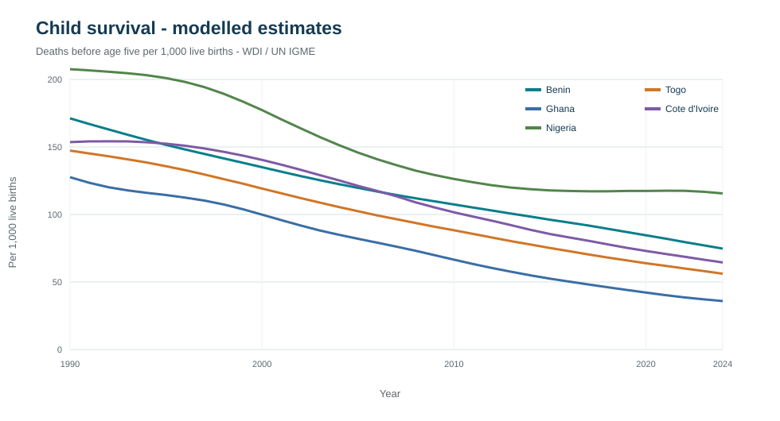
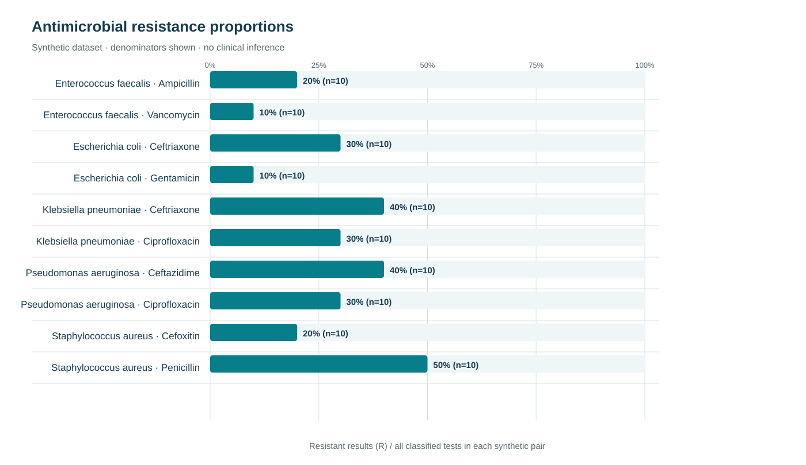
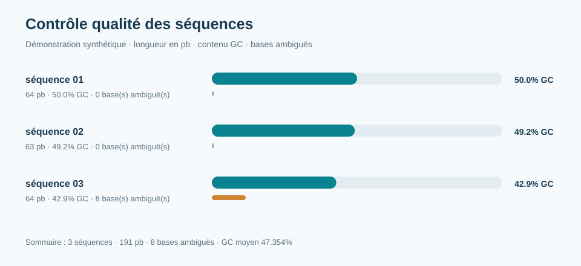

Akonassou Sedjro Tchédrac Singbo
Inspecteur d’Actions Sanitaires en Analyse Biomédicale et technicien de laboratoire, titulaire d’une licence en biotechnologie médicale. Expérience en hématologie, biochimie clinique, sérologie, microbiologie et parasitologie.
Profil scientifique
Mon parcours associe la pratique du laboratoire hospitalier à la recherche biomédicale et à l’analyse de données. Je m’intéresse au contrôle qualité, à la validation technique des résultats, à la biosécurité et à la traçabilité des données de laboratoire.
Mon mémoire de licence porte sur l’évaluation statistique de biomarqueurs inflammatoires dans le dysfonctionnement prostatique. Il étudie 81 patients au CHUD Ouémé-Plateau à partir de la CRP, du PSA, des leucocytes et des cytokines.
Parcourir le portfolio
Contact professionnel : akonassousedjrotchedracs@gmail.com
Projets du portfolio
Les projets 01 à 04 sont des démonstrations techniques sur données synthétiques, reproductibles avec les scripts, les jeux d’essai et les logiciels indiqués dans chaque fiche. Le projet 05 présente le mémoire de licence. Les démonstrations ne sont pas des résultats du CHU-MEL.

Biomarqueurs inflammatoires et dysfonctionnement prostatique
Mémoire de licence : étude de 81 patients, CRP, PSA, leucocytes et cytokines. Note : 17,67/20.
Travail de rechercheConsulter le mémoire →
Santé de l’enfant et données publiques
175 estimations annuelles WDI/UN IGME, 1990–2024; analyse descriptive reproductible.
Données publiques modéliséesConsulter le projet →
Résistance aux antimicrobiens
Résumé des catégories S/I/R, effectifs et proportions sur 100 observations synthétiques.
Démonstration synthétiqueConsulter le projet →
Contrôle qualité de séquences
Métriques exploratoires sur trois séquences FASTA synthétiques.
Démonstration synthétiqueConsulter le projet →
SQL et pipeline ETL
Validation, audit, traçabilité et agrégations sur 191 observations synthétiques.
Démonstration synthétiqueConsulter le projet →
Proportions et intervalles de Wilson
Intervalles de Wilson à 95 % calculés sur 300 lignes synthétiques (50 par groupe).
Démonstration synthétiqueConsulter le projet →Lire les méthodes et résultats transversaux · Lire la documentation
Galerie
Cette galerie presentera des photographies personnelles prises pendant les activites et projets, avec les autorisations necessaires et sans patient identifiable.
Photos a ajouter
Aucun visuel personnel n’a ete fourni pour le moment. Les graphiques scientifiques sont integres dans les fiches de projets; aucun visuel generique n’est presente comme une photo de travail.
Expérience professionnelle
Depuis juillet 2026 · CHU-MEL, Cotonou
Inspecteur d’Actions Sanitaires en Analyse Biomédicale
Analyses en hématologie, biochimie clinique, sérologie/immunologie, microbiologie et parasitologie. Techniques pratiquées : frottis sanguins, ELISA, immunoturbidimétrie, culture bactérienne, coloration de Gram et antibiogrammes. Activités de contrôle qualité, validation technique des résultats, biosécurité et gestion des données de laboratoire.
Juin – septembre 2025 · CHUD Ouémé-Plateau, Porto-Novo
Stagiaire, technicien de laboratoire médical
Réception et traitement des échantillons ; analyses en bactériologie, hématologie, biochimie, sérologie et parasitologie ; participation au contrôle qualité et à la validation technique des résultats.
Mars – juin 2024 · CHUD Ouémé-Plateau, Porto-Novo
Stagiaire de recherche · mémoire de fin d’études
Conception du protocole, dosage de biomarqueurs (CRP, PSA, leucocytes, cytokines), traitement statistique, rédaction et soutenance du mémoire (17,67/20).
Juillet – août 2023 · Centre de Santé d’Adjarra
Stagiaire académique
Accueil des patients, participation aux prélèvements, analyses de biologie médicale courante et archivage des données.
Formation
2021–2024 · Licence en Biotechnologie Médicale
ENSBBA–UNSTIM, Dassa-Zoumé, Bénin · Mention Bien
Moyenne finale : 15,87/20. Note du mémoire : 17,67/20.
Mémoire de fin d’études
Évaluation statistique des biomarqueurs inflammatoires dans le dysfonctionnement prostatique : étude de 81 patients au CHUD Ouémé-Plateau, portant sur la CRP, le PSA, les leucocytes et les cytokines.
Certifications et formations en ligne terminées
- Anglais B2, TBC-AFRICA-USA, Cotonou (2024).
- iSHEERO × DataCamp Scholar (2026) : Python, SQL, visualisation de données et introduction au machine learning.
- BIO101, Saylor.org (2026) : 85,19 %.
- CHEM101, Saylor.org (2026) : 91,84 %.
Formation en cours
- Microsoft Data Analyst Certification : parcours en cours.
2021 · Baccalauréat, série D
CEG Malanhoui, Adjarra, Bénin.
Vision et carrière futures
La philosophie de l’expérience
Pour moi, l’expérience en laboratoire se construit à chaque étape : accueillir et identifier correctement un échantillon, appliquer une méthode avec rigueur, contrôler la qualité, interpréter le résultat dans son contexte et transmettre une information fiable. La précision technique a de la valeur lorsqu’elle s’accompagne de responsabilité, de traçabilité et de respect du patient.
Je considère chaque résultat comme une donnée à vérifier, chaque procédure comme un engagement de qualité et chaque anomalie comme une occasion d’apprendre. Cette approche relie le travail quotidien du laboratoire à la recherche : observer avec méthode, reconnaître les limites, documenter les décisions et partager des conclusions proportionnées aux preuves.
Cap professionnel
Je souhaite approfondir mes compétences en hématologie, assurance qualité, biologie médicale et analyse de données, puis contribuer à des équipes qui renforcent la fiabilité des examens et la capacité de recherche des laboratoires. À terme, mon ambition est de participer à des projets biomédicaux collaboratifs, à la formation pratique des apprenants et à l’amélioration continue des pratiques diagnostiques.
Cette vision est une orientation de carrière : elle décrit des objectifs à poursuivre, non des réalisations déjà accomplies.
Compétences
Analyses de biologie médicale
Hématologie, biochimie clinique, sérologie/immunologie, microbiologie et parasitologie ; frottis sanguins, ELISA, immunoturbidimétrie, culture bactérienne, coloration de Gram et antibiogrammes.
Qualité et recherche
Contrôle qualité, validation technique des résultats, biosécurité, gestion des données de laboratoire, conception de protocoles de recherche, biostatistique et rédaction scientifique.
Compétences numériques et logiciels
Outils utilisés dans les démonstrations et liens officiels pour accéder aux logiciels :
Télécharger Python · Documentation SQLite · Excel pour le web · Télécharger Power BI Desktop. Les projets 01 à 04 distribuent leurs scripts, jeux de données et résultats reproductibles. Microsoft Data Analyst : formation en cours.
Langues
Français : langue maternelle. Anglais : B2 dans les compétences évaluées (compréhension orale et écrite, expression orale en continu et en interaction, écriture). Certificat d’anglais B2, TBC-AFRICA-USA, Cotonou, 2024.
Engagements
- Préfet des Jeunes, département de l’Ouémé, Gouvernement des Jeunes du Bénin (depuis 2025).
- Référent technique, Commission Hygiène et Santé, Forum Social Mondial 2026, Cotonou.
- ODL Facilitator, Africitizen ODL Facilitators Fellowship (depuis 2025).
- Président des Institutions Spécialisées, Fédération des Étudiants, FEUA (2022–2024).
Ces expériences ont contribué à la coordination d’équipes bénévoles et d’acteurs de terrain, à la planification de dispositifs sanitaires multi-acteurs et à la gestion de projets associatifs.
Distinctions et participation
- Meilleur Leader de l’année, ENSBBA (2023).
- iSHEERO Alumnus / DataCamp Scholar (2026).
- Participant, Young Diplomats Conference (COJED, 2025).
Les certifications et formations continues sont détaillées dans la rubrique Formation.
Preuves et liens de vérification
Dépôt public du portfolio sur GitHub : scripts, données de démonstration et provenance des projets.
Les liens de vérification de certificats, un profil LinkedIn vérifié et des lettres de référence ne sont pas encore fournis; aucune validation externe n'est revendiquée ici.
Indicateurs d’impact professionnel
Les volumes d’analyses, délais, indicateurs d’erreurs ou changements mesurés au CHU-MEL ne sont pas publiés faute de données documentées et autorisées. Cette rubrique pourra être complétée lorsque des métriques agrégées auront été vérifiées.